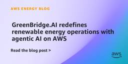
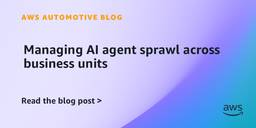

AWS for Industries
フィード
How Axel Springer transformed ad monetization by migrating from client-side bidding to AWS RTB Fabric
AWS for Industries
Axel Springer is a family-owned transatlantic media company focused on publishing (including BILD, BUSINESS INSIDER, POLITICO, and WELT) and commerce (including Idealo, Bonial, and Awin). Axel Springer aims to become the leading provider of digital and AI-supported journalism in the free world. Axel Springer Tech is the company’s technology organization, building and operating technology products […]
3日前
How Peloton Engineers the World’s Largest Live Fitness Events on AWS
AWS for Industries
Every Thanksgiving, tens of thousands of Peloton Members log on for Turkey Burn, a community tradition that has grown into one of the most technically demanding real-time workloads in the fitness industry. In 2024 and 2025, that engineering foundation held flawlessly: two consecutive events, zero major incidents. This builds on a 2023 Guinness World Record that saw 27,556 simultaneous participants in a single cycling class. Behind those results is a sophisticated cloud architecture on AWS, shaped by years of rigorous engineering, deep partnership between Peloton and AWS teams, and a relentless commitment to continuous improvement.
4日前
Henry Schein One goes AI-native with AI Product Discovery and Strategy
AWS for Industries
Learn how Henry Schein ONE serves more than 100,000 dental practices worldwide with cloud infrastructure on Amazon Web Services (AWS). The company's mission is simple: help practitioners spend less time on technology and more time on patient care.
4日前
Cloud Adoption Update for Financial Market Infrastructure Providers 1H26
AWS for Industries
Learn how through its strategic partnership with Nasdaq and AWS, BYMA (Bolsas y Mercados Argentinos) went live on Nasdaq's Eqlipse Clearing platform, hosted on AWS — becoming one of the first FMIs in Latin America to run core clearing and settlement workloads in the cloud.
4日前
How AWS helps Hong Kong banks deliver on HKMA DART Framework
AWS for Industries
Learn how financial institutions in Hong Kong face a defining moment in how they deliver technology-driven banking: the Hong Kong Monetary Authority (HKMA) launched Fintech 2030 on November 3, 2025, introducing the DART framework with named initiatives and clear supervisory expectations.
4日前

GreenBridge.AI redefines renewable energy operations with agentic AI on AWS
AWS for Industries
Renewable energy operators face a growing challenge: Managing increasingly large, complex, high-value portfolios across solar, wind, and battery energy storage system (BESS) while meeting tighter compliance, grid, and market demands. Many operational workflows remain reactive, manual, and fragmented—limiting both performance and scalability. However, GreenBridge.AI is innovating renewable energy operations through AI agents for greater automated efficiency and scalability.
6日前
Build a voice-enabled Automotive and Manufacturing assistant using Amazon Nova Sonic and Amazon Bedrock AgentCore
AWS for Industries
In this post, we show you how Amazon Nova Sonic, Amazon Bedrock AgentCore, and Strands Agents come together in VEMA (Voice-Enabled Manufacturing Assistant)—an AI-powered voice assistant that lets workers speak naturally to get instant answers, hands-free, in English or Spanish, without ever leaving their workstation.
7日前

Managing AI agent sprawl across business units
AWS for Industries
This blog introduces a governance framework designed for organizations with multiple business units that need to enable fast agent development while maintaining enterprise-wide visibility, cost control, and safety.
7日前

Dynamic Inbound Routing for BYOIP Workloads Using Amazon VPC Route Server
AWS for Industries
In this post, we show you how to use Amazon VPC Route Server with dynamic Border Gateway Protocol (BGP) routing to automate failover for BYOIP workloads. This solution is designed for workloads that route large public IP pools through network appliances in AWS, including security inspection pipelines, IoT platforms, media delivery networks, and firewall deployments. Telecommunications operators managing large subscriber IP pools will also find this pattern directly applicable.
8日前
How Autel Transformed Charging Station Management with AI Agents on AWS
AWS for Industries
This post shows how Autel used AWS cloud services and AI technologies to build an AI digital employee system that streamlines charging station operations. We explore the five specialized AI agents we created, the technical architecture powering them, and how these intelligent employees enable CPOs to manage their charging networks more efficiently with conversational interfaces rather than complex manual processes.
8日前